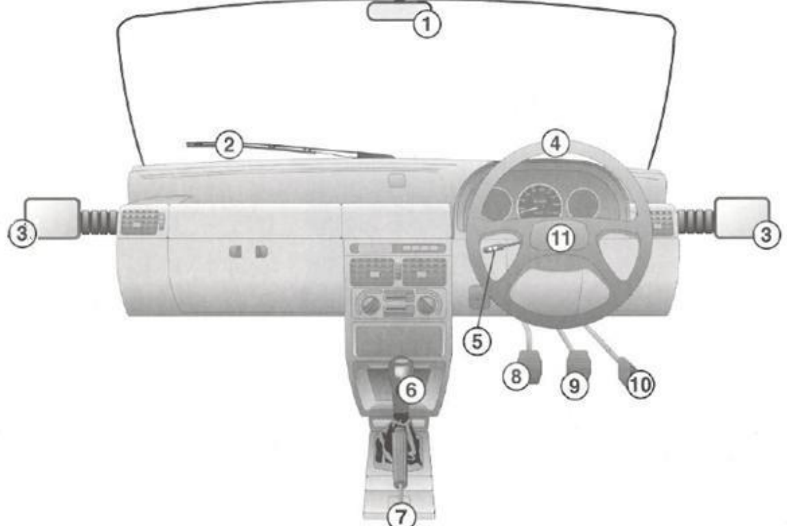
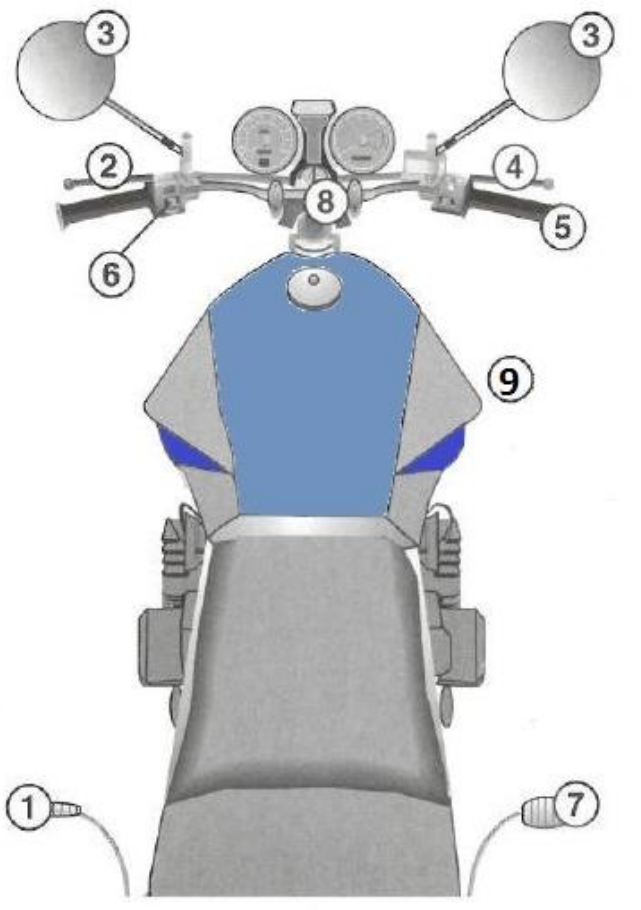

{{tq.q}}
The trap
{{tq.trap}}
In plain words
{{tq.simple}}
Remember it: {{tq.hook}}
A few minutes a day: watch, learn the key points, test yourself, and let the daily review bring back what you are about to forget.
Your choice sets the vehicle controls diagram and the questions you get, so pick it before you start. You can change it later.
A few minutes every day beats one long session. Pick a time and save a daily reminder to your phone's calendar. You can change it later in Settings.
66 multiple-choice questions in three parts, in 60 minutes. Each part is marked on its own, so you must reach the pass mark in every part. A perfect score on signs will not save a fail on controls.
Work through the sessions in order. Each one has four short steps: 1. watch, 2. key points, 3. tricky questions, 4. mini test.
All ten sessions take about {{totalTime}} in total, including the mini tests. The animated films are optional and add about {{filmTime}}. Times are estimates; take longer on the sessions you find hard.
Short, focused practice. The first four are the quickest way to make things stick.
Quick, random practice for each part of the test. You see right or wrong and the explanation straight after each answer.
Short rules that are easy to remember. Read them out loud once; it helps them stick.
Most hard questions are really number questions. Learn this list, then drill it until it is automatic.
Answer in your head first, then tap to check. Trying to remember is what makes it stick.
Pick a deck. Look at the sign, say what it means in your head, then flip the card. Be honest: "Not sure" brings it back sooner, which is how it sticks.
These look alike but mean very different things. Compare them, then test yourself.
{{sess.blurb}}


This browser has no built-in voice, so the explainer plays as timed captions.
These are the questions in this part of the test that catch people out. Each one is broken down into the trap, the rule in plain words, and a quick way to remember it.
Free study aid based on the Department of Transport learner driver manuals (Rules of the Road, Manual on Road Traffic Signs and Vehicle Controls, version 1.00, 2012, copyright SA Department of Transport, free from natis.gov.za). Sign, marking, signal and control images are taken from those manuals. Not for sale. Rules and the exact test format can change, so check with your testing centre before the day.
{{tour.t}}